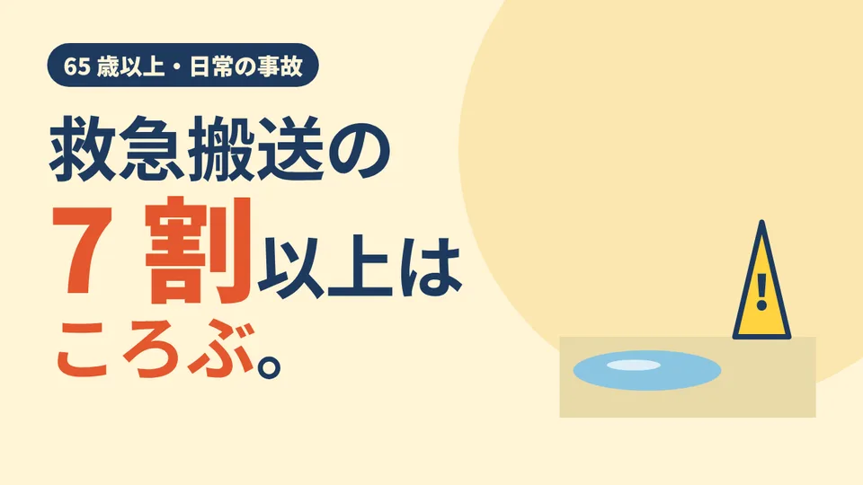

CLEAN CARE JOURNAL / ためになる仕事術
高齢者の救急搬送、7 割以上は「ころぶ」。
濡れた床を残さない、清掃の話

お年寄りが救急車で運ばれる日常の事故。いちばん多いのは何だと思いますか? 火事でも、交通事故でもありません。東京消防庁の数字を見ると、答えはとても身近なところにあります。
99,465 人のうち、7 割以上
東京消防庁の「令和 7 年中」の資料によると、日常生活の事故で救急搬送された 65 歳以上の方は 99,465 人。日常生活の事故で運ばれた人全体(165,122 人)の半数以上を占めます。
その事故の種類でいちばん多いのが「ころぶ」で、74,689 人、7 割以上。しかも、ころんで運ばれた方のうち 41.4% は「中等症」以上でした。中等症とは、命に危険はないものの入院が必要な状態を指します。「ちょっと転んだだけ」では済まないことが、数字からも見えてきます。
足もとは、毎日変わる
ころぶ原因はひとつではありません。体の状態、履物、段差、明るさ。どれも大切ですが、清掃にかかわるのは「床の状態」です。こぼれた水、拭いたばかりの床、雨の日の玄関マットのまわり。床は一日のうちに何度も表情を変えます。
濡れた床は、乾いた床よりすべりやすくなります。そして困ったことに、見た目では乾いているかどうか分かりにくいことがある。拭き掃除は床をきれいにする作業ですが、終わった直後の床は、一日でいちばん濡れている床でもあるのです。
どんでん返し:掃除が、危ない時間をつくることもある
ここに、清掃の仕事のむずかしさがあります。きれいにしようとして床を濡らせば、その間は転びやすい床を自分でつくっていることになる。だから大事なのは「どれだけ磨いたか」だけではなく、「濡れている時間をどれだけ短く、どれだけ人から遠ざけたか」です。
人が多い時間を避ける。半分ずつ作業して、乾いた通り道を必ず残す。乾くまで分かるように知らせる。水を使いすぎない。こうした段取りは、目立たないけれど、ころぶ事故を減らすための仕事の一部です。
結び:床は、ころばないための道具
床は、ただの足場ではありません。毎日たくさんの人が、そこを信じて歩いています。きれいで、乾いていて、いつもと同じ。その「いつもと同じ」を守ることが、足もとの安全につながります。
現場では
LOTUS クリーンケアサービスは、介護施設の清掃で「濡れた床を残さない」を決まりにしています。食事・入浴・お昼寝の時間を外し、廊下は半分ずつ作業して通り道を残し、濡れている場所は表示して乾くまで見守ります。水気の多い場所は、拭き上げで乾いた状態に戻してから次へ進みます。気づいた段差や破損は写真でお伝えします。転倒の予防そのものは、施設の方針と専門職の判断が中心です。私たちは、その足もとを支える役割を担います。
今日の持ち帰り
- 東京消防庁の令和 7 年中の資料で、日常生活の事故で運ばれた 65 歳以上は 99,465 人。そのうち「ころぶ」が 7 割以上。
- ころんで運ばれた方の 41.4% は入院が必要な中等症以上。
- 拭いた直後の床がいちばん濡れている。時間を選び、通り道を残し、乾くまで知らせる。
出典:東京消防庁「数字で見る令和 7 年中の災害動向等」(東京消防庁白書 2026 所収)(65 歳以上の日常生活事故の救急搬送人員 99,465 人、全体 165,122 人、「ころぶ」74,689 人・7 割以上、中等症以上 41.4%、中等症の定義)。2026 年 11 月 10 日閲覧。数字は東京消防庁管内のものです。転倒の予防や治療は、医療・介護の専門職にご相談ください。